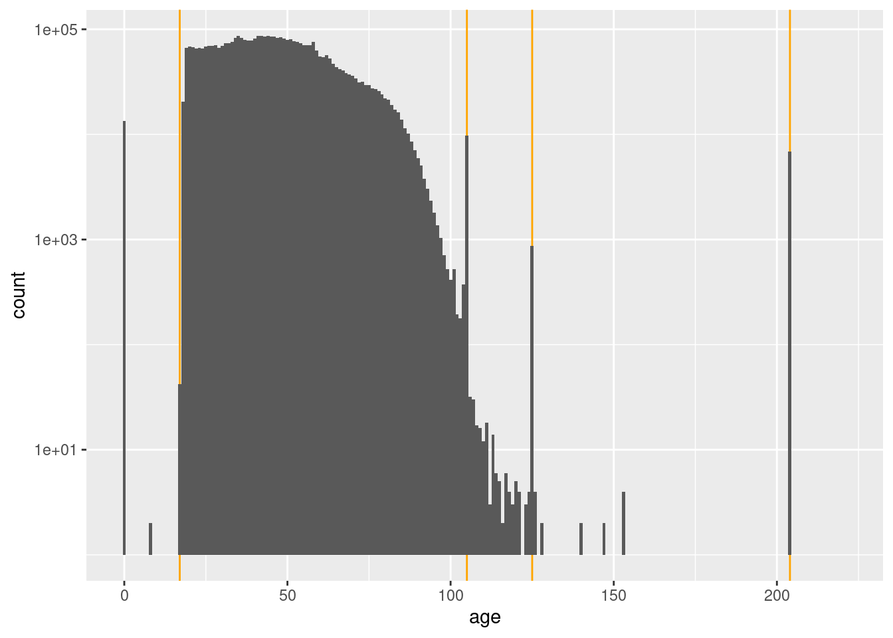

Last updated: 2021-01-12
Checks: 7 0
Knit directory:
fa_sim_cal/
This reproducible R Markdown analysis was created with workflowr (version 1.6.2). The Checks tab describes the reproducibility checks that were applied when the results were created. The Past versions tab lists the development history.
Great! Since the R Markdown file has been committed to the Git repository, you know the exact version of the code that produced these results.
Great job! The global environment was empty. Objects defined in the global environment can affect the analysis in your R Markdown file in unknown ways. For reproduciblity it’s best to always run the code in an empty environment.
The command set.seed(20201104) was run prior to running the code in the R Markdown file.
Setting a seed ensures that any results that rely on randomness, e.g.
subsampling or permutations, are reproducible.
Great job! Recording the operating system, R version, and package versions is critical for reproducibility.
Nice! There were no cached chunks for this analysis, so you can be confident that you successfully produced the results during this run.
Great job! Using relative paths to the files within your workflowr project makes it easier to run your code on other machines.
Great! You are using Git for version control. Tracking code development and connecting the code version to the results is critical for reproducibility.
The results in this page were generated with repository version 7a1ce01. See the Past versions tab to see a history of the changes made to the R Markdown and HTML files.
Note that you need to be careful to ensure that all relevant files for the
analysis have been committed to Git prior to generating the results (you can
use wflow_publish or wflow_git_commit). workflowr only
checks the R Markdown file, but you know if there are other scripts or data
files that it depends on. Below is the status of the Git repository when the
results were generated:
Ignored files:
Ignored: .Rhistory
Ignored: .Rproj.user/
Ignored: .tresorit/
Ignored: data/VR_20051125.txt.xz
Ignored: output/ent_raw.fst
Ignored: renv/library/
Ignored: renv/staging/
Untracked files:
Untracked: analysis/01_get_check_data.Rmd.txt
Note that any generated files, e.g. HTML, png, CSS, etc., are not included in this status report because it is ok for generated content to have uncommitted changes.
These are the previous versions of the repository in which changes were made
to the R Markdown (analysis/01-4_check_demog.Rmd) and HTML (docs/01-4_check_demog.html)
files. If you’ve configured a remote Git repository (see
?wflow_git_remote), click on the hyperlinks in the table below to
view the files as they were in that past version.
| File | Version | Author | Date | Message |
|---|---|---|---|---|
| Rmd | 7a1ce01 | Ross Gayler | 2021-01-12 | wflow_publish(c(“analysis/index.Rmd”, "analysis/01-4*.Rmd")) |
| html | abb201f | Ross Gayler | 2021-01-12 | Build site. |
| Rmd | 2ae8660 | Ross Gayler | 2021-01-12 | Add 01-4 check demog |
# Set up the project environment, because each Rmd file knits in a new R session
# so doesn't get the project setup from .Rprofile
# Project setup
library(here)
source(here::here("code", "setup_project.R"))── Attaching packages ─────────────────────────────────────── tidyverse 1.3.0 ──✓ ggplot2 3.3.3 ✓ purrr 0.3.4
✓ tibble 3.0.4 ✓ dplyr 1.0.2
✓ tidyr 1.1.2 ✓ stringr 1.4.0
✓ readr 1.4.0 ✓ forcats 0.5.0── Conflicts ────────────────────────────────────────── tidyverse_conflicts() ──
x dplyr::filter() masks stats::filter()
x dplyr::lag() masks stats::lag()# Extra set up for the 01*.Rmd notebooks
source(here::here("code", "setup_01.R"))
Attaching package: 'glue'The following object is masked from 'package:dplyr':
collapse# Extra set up for this notebook
# ???
# start the execution time clock
tictoc::tic("Computation time (excl. render)")The 01*.Rmd notebooks read the data, filter it to the subset to be
used for modelling, characterise it to understand it, check for possible
gotchas, clean it, and save it for the analyses proper.
This notebook (01-4_check_demog) characterises the demographic
variables in the saved subset of the data. These are the non-name
variables that are reasonably interpretable as properties of the person.
We will probably use some of these variables as predictors in a compatibility model and/or as blocking variables.
Define the demographic variables.
vars_resid <- c(
"sex_code", "sex", "age", "birth_place"
)Read the usable data. Remember that this consists of only the ACTIVE & VERIFIED records.
# Show the entity data file location
# This is set in code/file_paths.R
f_entity_fst[1] "/home/ross/RG/projects/academic/entity_resolution/fa_sim_cal_TOP/fa_sim_cal/output/ent_raw.fst"# get data for next section of analyses
d <- fst::read_fst(
f_entity_fst,
columns = vars_resid
) %>%
tibble::as_tibble()
dim(d)[1] 4099699 4Take a quick look at the distributions.
d %>% skimr::skim()| Name | Piped data |
| Number of rows | 4099699 |
| Number of columns | 4 |
| _______________________ | |
| Column type frequency: | |
| character | 4 |
| ________________________ | |
| Group variables | None |
Variable type: character
| skim_variable | n_missing | complete_rate | min | max | empty | n_unique | whitespace |
|---|---|---|---|---|---|---|---|
| sex_code | 0 | 1.00 | 1 | 1 | 0 | 3 | 0 |
| sex | 0 | 1.00 | 3 | 6 | 0 | 3 | 0 |
| age | 0 | 1.00 | 1 | 3 | 0 | 135 | 0 |
| birth_place | 718647 | 0.82 | 2 | 2 | 0 | 56 | 0 |
sex_code 100% filledsex 100% filledage 100% filledbirth_place 82% filledsex_code Gender code
sex Gender description
d %>%
with(table(sex_code, sex, useNA = "ifany")) sex
sex_code FEMALE MALE UNK
F 2239888 0 0
M 0 1844220 0
U 0 0 15591sex_code and sex in 1-1 relationshipbirth_place Birth place
table(d$birth_place, useNA = "ifany") %>% sort() %>% rev()
NC <NA> NY VA SC PA OC OH FL NJ
1875088 718647 189726 131356 97827 93496 76209 75765 69032 67588
GA CA MI IL WV TX TN MD MA IN
56176 50560 48081 47613 42143 37852 36797 36369 33519 26719
KY AL DC CT MO WI LA CO MS IA
24276 23877 22563 22394 16066 15663 15362 12803 12047 10891
MN OK WA KS AR ME RI NE DE AZ
10388 9609 9083 8656 6614 6284 6039 5592 5373 5043
NH HI VT OR NM AK UT PR ND SD
4880 3870 3783 3764 3435 3201 3088 2591 2399 2240
ID MT NV WY VI GU AS
2003 1901 1542 1280 355 149 32 birth_place values appear to be 2-character US state abbreviationsage Age (years)
I presume that the source documents actually record date of birth rather than age, and that age is reported in these files as a gesture to privacy.
Look at the distribution of age.
x <- d %>%
dplyr::mutate(age = as.integer(age))
x$age %>% summary() Min. 1st Qu. Median Mean 3rd Qu. Max.
0.00 33.00 45.00 46.93 58.00 221.00 x$age %>% quantile(probs = c(0.003, 0.004, 0.995, 0.996, 0.997, 0.998, 0.999)) 0.3% 0.4% 99.5% 99.6% 99.7% 99.8% 99.9%
0 18 98 105 105 105 204 x %>%
# dplyr::filter(age >= 80) %>%
ggplot() +
geom_vline(xintercept = c(17, 105, 125, 204), colour = "orange") +
geom_histogram(aes(x = age), binwidth = 1) +
scale_y_log10()Warning: Transformation introduced infinite values in continuous y-axisWarning: Removed 87 rows containing missing values (geom_bar).
| Version | Author | Date |
|---|---|---|
| abb201f | Ross Gayler | 2021-01-12 |
Computation time (excl. render): 12.711 sec elapsed
sessionInfo()R version 4.0.3 (2020-10-10)
Platform: x86_64-pc-linux-gnu (64-bit)
Running under: Ubuntu 20.10
Matrix products: default
BLAS: /usr/lib/x86_64-linux-gnu/blas/libblas.so.3.9.0
LAPACK: /usr/lib/x86_64-linux-gnu/lapack/liblapack.so.3.9.0
locale:
[1] LC_CTYPE=en_AU.UTF-8 LC_NUMERIC=C
[3] LC_TIME=en_AU.UTF-8 LC_COLLATE=en_AU.UTF-8
[5] LC_MONETARY=en_AU.UTF-8 LC_MESSAGES=en_AU.UTF-8
[7] LC_PAPER=en_AU.UTF-8 LC_NAME=C
[9] LC_ADDRESS=C LC_TELEPHONE=C
[11] LC_MEASUREMENT=en_AU.UTF-8 LC_IDENTIFICATION=C
attached base packages:
[1] stats graphics grDevices datasets utils methods base
other attached packages:
[1] hexbin_1.28.2 glue_1.4.2 knitr_1.30 skimr_2.1.2
[5] fst_0.9.4 forcats_0.5.0 stringr_1.4.0 dplyr_1.0.2
[9] purrr_0.3.4 readr_1.4.0 tidyr_1.1.2 tibble_3.0.4
[13] ggplot2_3.3.3 tidyverse_1.3.0 tictoc_1.0 here_1.0.1
[17] workflowr_1.6.2
loaded via a namespace (and not attached):
[1] Rcpp_1.0.5 lattice_0.20-41 lubridate_1.7.9.2 assertthat_0.2.1
[5] rprojroot_2.0.2 digest_0.6.27 repr_1.1.0 R6_2.5.0
[9] cellranger_1.1.0 backports_1.2.1 reprex_0.3.0 evaluate_0.14
[13] highr_0.8 httr_1.4.2 pillar_1.4.7 rlang_0.4.10
[17] readxl_1.3.1 rstudioapi_0.13 whisker_0.4 rmarkdown_2.6
[21] labeling_0.4.2 munsell_0.5.0 broom_0.7.3 compiler_4.0.3
[25] httpuv_1.5.4 modelr_0.1.8 xfun_0.20 base64enc_0.1-3
[29] pkgconfig_2.0.3 htmltools_0.5.0 tidyselect_1.1.0 bookdown_0.21
[33] fansi_0.4.1 crayon_1.3.4 dbplyr_2.0.0 withr_2.3.0
[37] later_1.1.0.1 grid_4.0.3 jsonlite_1.7.2 gtable_0.3.0
[41] lifecycle_0.2.0 DBI_1.1.0 git2r_0.28.0 magrittr_2.0.1
[45] scales_1.1.1 cli_2.2.0 stringi_1.5.3 farver_2.0.3
[49] renv_0.12.5 fs_1.5.0 promises_1.1.1 xml2_1.3.2
[53] ellipsis_0.3.1 generics_0.1.0 vctrs_0.3.6 tools_4.0.3
[57] hms_0.5.3 parallel_4.0.3 yaml_2.2.1 colorspace_2.0-0
[61] rvest_0.3.6 haven_2.3.1